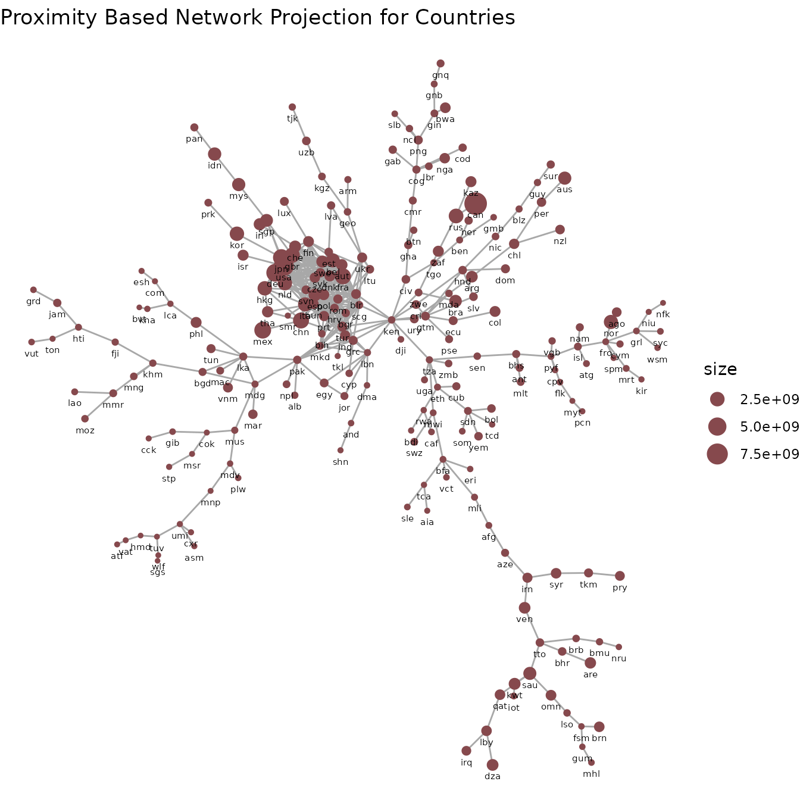
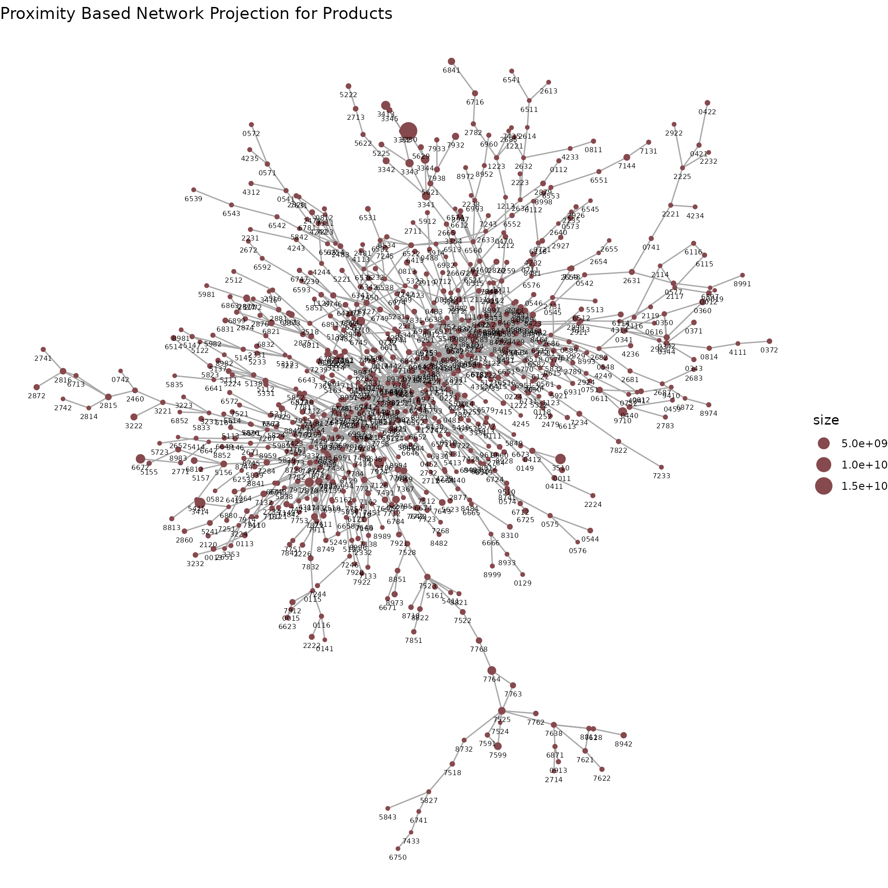

vignettes/economiccomplexity.Rmd
economiccomplexity.RmdThis example is inspired after the visualizations from Hausmann et al. (2014) with some ggplot additions.
library(economiccomplexity)
# partial view of trade matrix
head(world_trade_avg_1998_to_2000)## country product value
## 1 afg 0011 30068
## 2 afg 0012 16366
## 3 afg 0111 19273
## 4 afg 0112 893
## 5 afg 0113 350
## 6 afg 0116 1561
# partial view of gdp vector
head(world_gdp_avg_1998_to_2000)## country value
## 1 abw 19185
## 2 ago 1540
## 3 alb 1433
## 4 and 27765
## 5 arb 3312
## 6 are 43082You can obtain Balassa Index with balassa_index().
bi <- balassa_index(world_trade_avg_1998_to_2000)
# partial view of index
bi[1:5,1:5]## 5 x 5 sparse Matrix of class "dgCMatrix"
## 0011 0012 0013 0014 0015
## afg . . . . .
## ago . . . . .
## aia . . . . .
## alb . . . . .
## and 1 . . . 1Another possibility is to obtain Balassa Index without discretization.
bi_dec <- balassa_index(world_trade_avg_1998_to_2000, discrete = F)
# partial view of index
bi_dec[1:5,1:5]## 5 x 5 sparse Matrix of class "dgCMatrix"
## 0011 0012 0013 0014 0015
## afg 0.2312238 0.285438688 . . .
## ago 0.1777917 0.087436319 0.002076625 0.00139056 0.001106041
## aia . 0.002581853 . . .
## alb . . . 0.01582754 0.073011368
## and 2.4825815 0.550954168 . 0.48208017 3.815013019You can compute complexity indexes (e.g. such as the Economic
Complexity Index and Product Complexity Index) by using
complexity_measures(). The calculations methods are
fitness (default), reflections, eigenvalues.
See (Mariani et al. 2015) for the
methodological details.
The eigenvalues also calls the reflections methods in order to correct the index sign in some special cases when the correlation between the output from both methods is negative.
com_fit <- complexity_measures(bi)
# partial view of indexes
com_fit$complexity_index_country[1:5]## afg ago aia alb and
## 0.78605655 0.03999516 1.05645538 1.24261128 1.37321261
com_fit$complexity_index_product[1:5]## 0011 0012 0013 0014 0015
## 0.7538883 0.7491391 2.3018690 0.9903918 1.3120378
com_ref <- complexity_measures(bi, method = "reflections")
# partial view of indexes
com_ref$complexity_index_country[1:5]## afg ago aia alb and
## -0.5788151 -1.7710696 1.4074821 -0.1754989 1.0738736
com_ref$complexity_index_product[1:5]## 0011 0012 0013 0014 0015
## -0.66255107 -1.62169899 -0.07449487 0.20554720 0.15848845
com_eig <- complexity_measures(bi, method = "eigenvalues")
# partial view of indexes
com_eig$complexity_index_country[1:5]## afg ago aia alb and
## -0.5764283 -1.7770752 1.4090414 -0.1732606 1.0772452
com_eig$complexity_index_product[1:5]## 0011 0012 0013 0014 0015
## -0.66657613 -1.62657599 -0.08149436 0.19917280 0.14935653Proximity matrices are used to create projections
e.g. (country-country and product-product networks) for bipartite
networks. Using proximity() is straightforward.
pro <- proximity(bi)
# partial view of proximity matrices
pro$proximity_country[1:5,1:5]## 5 x 5 sparse Matrix of class "dsCMatrix"
## afg ago aia alb and
## afg 1.00000000 0.015873016 0.181818182 0.19689119 0.192513369
## ago 0.01587302 1.000000000 0.006993007 0.01554404 0.005347594
## aia 0.18181818 0.006993007 1.000000000 0.16580311 0.251336898
## alb 0.19689119 0.015544041 0.165803109 1.00000000 0.310880829
## and 0.19251337 0.005347594 0.251336898 0.31088083 1.000000000
pro$proximity_product[1:5,1:5]## 5 x 5 sparse Matrix of class "dsCMatrix"
## 0011 0012 0013 0014 0015
## 0011 1.0000000 0.3658537 0.1707317 0.2439024 0.2682927
## 0012 0.3658537 1.0000000 0.2500000 0.2250000 0.2500000
## 0013 0.1707317 0.2500000 1.0000000 0.2500000 0.1200000
## 0014 0.2439024 0.2250000 0.2500000 1.0000000 0.2250000
## 0015 0.2682927 0.2500000 0.1200000 0.2250000 1.0000000The projections() function is designed to use
igraph for the internal computations and also to pass
proximity-based networks to igraph, ggraph or
export to Cytoscape by saving the output as csv/tsv.
library(igraph)
net <- projections(pro$proximity_country, pro$proximity_product)
# partial view of projections
E(net$network_country)[1:5]## + 5/484 edges from f48f4d8 (vertex names):
## [1] zaf--zwe tza--zmb tza--uga tuv--wlf tuv--umi
E(net$network_product)[1:5]## + 5/1505 edges from 8fd6360 (vertex names):
## [1] 8981--8982 8946--9510 8922--8932 8921--8922 8852--8959Just two basic examples with ggraph.
set.seed(200100)
library(Matrix)
library(ggraph)
aggregated_countries <- aggregate(
world_trade_avg_1998_to_2000$value,
by = list(country = world_trade_avg_1998_to_2000$country),
FUN = sum
)
aggregated_countries <- setNames(aggregated_countries$x, aggregated_countries$country)
V(net$network_country)$size <- aggregated_countries[match(V(net$network_country)$name, names(aggregated_countries))]
ggraph(net$network_country, layout = "kk") +
# geom_edge_link(aes(edge_width = weight), edge_colour = "#a8a8a8") +
geom_edge_link(edge_colour = "#a8a8a8") +
geom_node_point(aes(size = size), color = "#86494d") +
geom_node_text(aes(label = name), size = 2, vjust = 2.2) +
ggtitle("Proximity Based Network Projection for Countries") +
theme_void()
set.seed(200100)
aggregated_products <- aggregate(
world_trade_avg_1998_to_2000$value,
by = list(country = world_trade_avg_1998_to_2000$product),
FUN = sum
)
aggregated_products <- setNames(aggregated_products$x, aggregated_products$country)
V(net$network_product)$size <- aggregated_products[match(V(net$network_product)$name, names(aggregated_products))]
ggraph(net$network_product, layout = "kk") +
# geom_edge_link(aes(edge_width = weight), edge_colour = "#a8a8a8") +
geom_edge_link(edge_colour = "#a8a8a8") +
geom_node_point(aes(size = size), color = "#86494d") +
geom_node_text(aes(label = name), size = 2, vjust = 2.2) +
ggtitle("Proximity Based Network Projection for Products") +
theme_void()
Both the Complexity Outlook Index and Complexity Outlook Gain are
obtained after the complexity_outlook() function.
co <- complexity_outlook(
economiccomplexity_output$balassa_index,
economiccomplexity_output$proximity$proximity_product,
economiccomplexity_output$complexity_measures$complexity_index_product
)
# partial view of complexity outlook
co$complexity_outlook_index[1:5]## afg ago aia alb and
## 103.948610 9.962401 122.311158 152.107317 151.295380
co$complexity_outlook_gain[1:5,1:5]## 5 x 5 Matrix of class "dgeMatrix"
## 0011 0012 0013 0014 0015
## afg 0.8615531 0.7613878 0.7537907 1.0961458 0.8143851
## ago 0.9681802 0.8436855 0.8219918 1.2151040 0.8883146
## aia 0.8339114 0.7475080 0.7247198 1.0425043 0.7671877
## alb 0.7979779 0.7199705 0.7132042 1.0170093 0.7636545
## and 0.0000000 0.7118512 0.6829531 0.9987236 0.0000000The productivity_levels() dataset follows the
definitions from Hausmann et al. (2014)
and Hausmann, Hwang, and Rodrik
(2005).
I don’t have a per-capita GDP dataset for the Galactic Federation, so I’ll create simulated data for the example.
pl <- productivity_levels(world_trade_avg_1998_to_2000, world_gdp_avg_1998_to_2000)
# partial view of productivity levels
pl$productivity_level_country[1:5]## ago alb and are arg
## 8223.607 6343.341 13783.485 10207.679 9269.670
pl$productivity_level_product[1:5]## 0011 0012 0013 0014 0015
## 7915.893 3986.371 11375.710 6273.428 17628.950